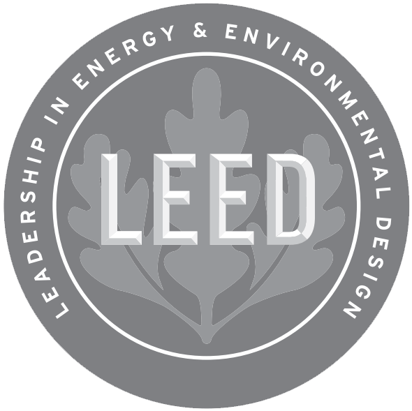
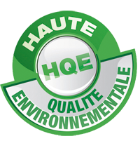
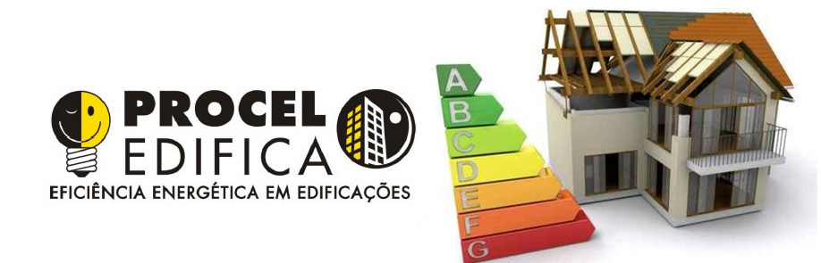
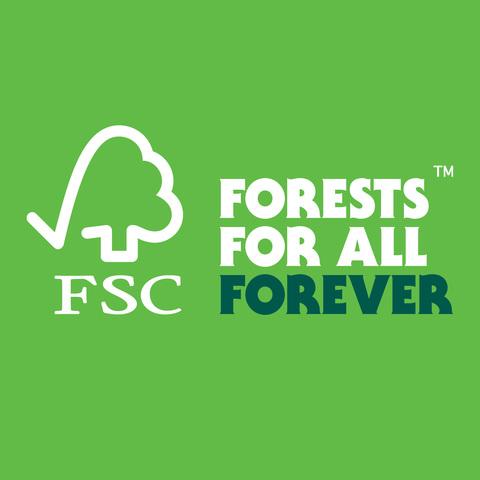
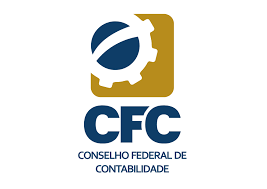
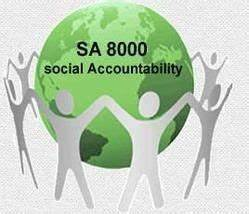
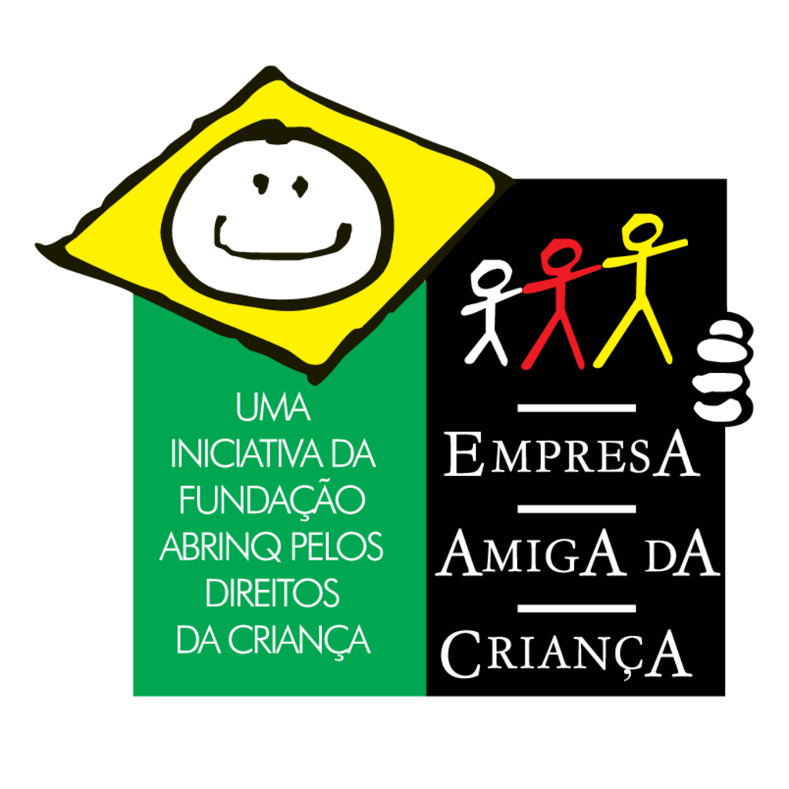
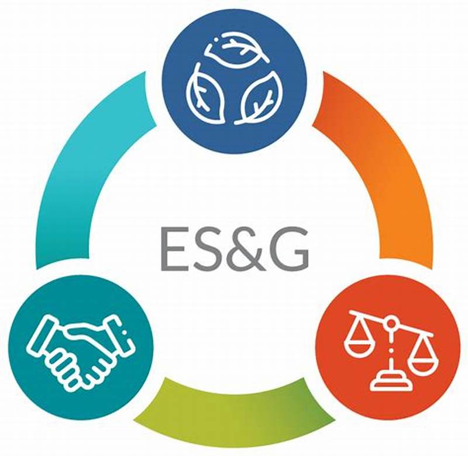

ODS - ONU
|
|
Em setembro de 2015, os 193 Estados-membros da ONU se comprometeram a adotar a Agenda Pós-2015. A Cúpula das Nações Unidas elaborou uma das agenda contendo os chamados Objetivos de Desenvolvimento Sustentável (ODS). Tais ODS incorporam um plano de ação global para eliminar pobreza extrema e fome, oferecer educação de qualidade para todos, proteger o planeta e promover sociedades pacíficas e inclusivas até 2030, estabelecendo compromissos das nações para com crianças e adolescentes nas áreas de pobreza, como também no tange à nutrição, saúde, educação, água e saneamento, e igualdade de gênero. Neste trabalho, os dados levantados forneceram a base para as conclusões e para virtuais recomendações a fim de viabilizar às empresas o cumprimento da meta 12.6 das ODS: “INCENTIVAR AS EMPRESAS A ADOTAR PRÁTICAS SUSTENTÁVEIS E INTEGRAR INFORMAÇÕES DE SUSTENTABILIDADE EM SEU CICLO DE RELATÓRIOS” (CLIQUE AQUI PARA VER O ODS 12 EM NOVA JANELA). O Desenvolvimento Sustentável se apóia em 4 pilares: ecologicamente correto, economicamente viável, socialmente justo, culturalmente aceito. Dentro desse conceito, as empresas devem incorporar em seus processos produtivos as preocupações com sua ‘pegada ambiental’ (footprint) nos processos de extração e compra de matérias primas, e da produção e comercialização do seus bens e/ou serviços. Mas, para além de tais abordagens, as empresas devem também cuidar do meio social no qual estão inseridas, respeitando suas peculiaridades sociais e culturais, de maneira a ser fator de manutenção, promoção, acolhimento e inclusão, numa relação de ganha-ganha, na qual todas as partes envolvidas obtêm benefícios mútuos e satisfatórios. |
MEIO AMBIENTE E SOCIEDADE |
|
Segundo CAMARGO et al. (2001), as organizações privadas socialmente responsáveis adotam uma perspectiva que, além de buscar desempenho e lucratividade, incorporam a preocupação pelos impactos sociais e ambientais de suas operações. Seu propósito é contribuir para o bem-estar geral e para o aprimoramento da qualidade de vida das comunidades. Diversas são as ferramentas que as empresas podem utilizar no sentido de informar o público sobre a responsabilidade ambiental e social das suas ações. Como exemplos, seguem elencadas abaixo algumas das mais relevantes ferramentas, amplamente reconhecidas, e aplicáveis a variadas tipologias empresariais. |
RESPONSABILIDADE AMBIENTAL |
|
As certificações ambientais alcançam diversas atividades econômicas. Na Construção Civil, a maior consumidora de recursos naturais e maior geradora de resíduos, alguns exemplos de certificações são: LEED, AQUA, Procel Edifica, entre outras. Serrador (2008) indica que 75% dos recursos naturais mundiais são consumidos pelo negócio da construção civil – gerando algo em torno de 500 kg / habitante.ano de resíduos – e que os edifícios em funcionamento são responsáveis por cerca de 50% do consumo da energia elétrica e por 21% do consumo da água do planeta. As certificações ambientais alcançam diversas atividades econômicas. Na Construção Civil, a maior consumidora de recursos naturais e maior geradora de resíduos, alguns exemplos de certificações são: LEED, AQUA, Procel Edifica, entre outras. Serrador (2008) indica que 75% dos recursos naturais mundiais são consumidos pelo negócio da construção civil – gerando algo em torno de 500 kg / habitante.ano de resíduos – e que os edifícios em funcionamento são responsáveis por cerca de 50% do consumo da energia elétrica e por 21% do consumo da água do planeta. |

LEED |
|
Leadership in Energy and Environmental Design é uma certificação internacional para edificações com o intuito de incentivar a transformação dos projetos, obra e operação das edificações, com foco na sustentabilidade das atuações, conferindo certificação nos níveis Certificados LEED, LEED Silver, LEED Gold e LEED Platinum, nas tipologias Localização e Transporte, Espaço Sustentável, Eficiência do Uso da Água, Energia e Atmosfera, Materiais e Recursos, Qualidade Ambiental Interna, Inovação e Processos, e Créditos de Prioridade Regional. (Green Building Council, 2024) |

AQUA - Alta Qualidade Ambiental /
|
|
AQUA-HQE™ é uma certificação internacional da construção de alta qualidade ambiental, desenvolvida a partir da renomada certificação francesa HQE™ e aplicada no Brasil exclusivamente pela Fundação Carlos Alberto Vanzolini. Os requisitos da certificação foram contextualizados pela Fundação, em parceria com a USP, para agregar valor às construções e projetos no Brasil, considerando aspectos culturais, do clima, das normas técnicas e regulamentações. Seja edifício, planejamento urbano ou infraestrutura e em todas as fases de seu ciclo de vida, a certificação AQUA-HQE™ adota uma visão global multitemática e multicritério que combina qualidade de vida, respeito ao meio ambiente, desempenho econômico e gestão e governança para um ambiente de vida sustentável, consistente com os Objetivos de Desenvolvimento Sustentável (ODS) das Nações Unidas. Compromissos:Qualidade de Vida, Respeito ao Meio Ambiente, Desempenho Econômico, e Gestão e Governança (Fundação Vanzolini, 2024). |

Procel Edifica - INMETRO |
|
Em 2003, foi lançado o PROCEL EDIFICA para eficiência energética em edificações, atuando em várias vertentes e com diversas atividades de incentivo à pesquisa, conscientização, incentivo ao uso racional de energia, desenvolvimento de mecanismos para diferenciação de mercado para edificações eficientes, disseminação de conceitos sobre eficiência energética por meio de publicações e implementando a lei de eficiência energética. Tal programa abrange as edificações residenciais, comerciais de serviços e públicas (LEDUC, 2008). São levados em conta para a certificação o projeto e cálculo de consumo que podem levar a uma economia de até 30% com iluminação, entre 10% e 20% com condicionamento de ar, e 10% com envoltória: área de vidro, fator solar do vidro, presença de sombreamento, etc. (Programa Brasileiro de Etiquetagem) |

FSC |
|
Como líder em silvicultura sustentável, o Forest Stewardship Council (FSC) é confiável por ONGs, empresas e consumidores em todo o mundo para proteger florestas saudáveis e resilientes para todos, para sempre. A certificação é apenas uma das maneiras pelas quais são colocados os padrões de silvicultura sustentável no centro dos trabalhos. Em parceria com um ecossistema diversificado de partes interessadas, desenvolvem novas soluções focadas em: Fontes Responsáveis: Auxiliando as empresas a trabalharem com florestas de forma responsável. Conservação: Mantendo e aprimorando o valor das florestas. Restauração: Acelerando a recuperação florestal. (Forest Stewardship Council, 2024). |

Balanço Social |
|
As empresas comprometidas com a Responsabilidade Social têm adotado o Balanço Social como uma ferramenta para comunicar suas iniciativas voltadas para colaboradores, comunidade e meio ambiente. Este relatório é publicado anualmente como uma maneira de evidenciar o envolvimento da empresa em questões sociais. De acordo com a Resolução do Conselho Federal de Contabilidade nº 1.003/04, todas as entidades, independente de porte, que querem demonstrar à sociedade a sua responsabilidade social, devem divulgar Informações de Natureza Social e Ambiental. Nenhuma empresa/entidade está obrigada a fazê-lo. Aquelas, porém, que optarem pela apresentação devem adotar as regras estabelecidas pela NBC T 15. Não compete ao CFC obrigar as empresas a elaborarem Demonstrações mas somente discipliná-las. De acordo com o item 1.5.1.3. da Resolução CFC nº 1.003/04: “A Demonstração de Informações de Natureza Social e Ambiental, ora instituída, quando elaborada, deve evidenciar os dados e as informações de natureza social e ambiental da entidade, extraídos ou não da contabilidade, de acordo com os procedimentos determinados por esta norma”. (CONSELHO REGIONAL DE CONTABILIDADE PR). |

Social Accountability 8000 |
|
O Padrão SA8000 é o principal programa de certificação social do mundo. O Padrão SA8000 e o Sistema de Certificação fornecem um quadro para organizações de todos os tipos, em qualquer setor e em qualquer país, conduzirem seus negócios de maneira justa e decente para os trabalhadores e demonstrarem sua adesão aos mais altos padrões sociais. Criado pela SAI - Social Accountability International, Contabilidade Social Internacional, em português, em 1997, como a primeira certificação social credível, ele tem liderado a indústria por mais de 20 anos. O Padrão SA8000 é baseado em padrões internacionalmente reconhecidos de trabalho decente, incluindo a Declaração Universal dos Direitos Humanos, convenções da OIT e leis nacionais. O SA8000 adota uma abordagem de sistemas de gestão para desempenho social e enfatiza a melhoria contínua, não a auditoria baseada em lista de verificação: Trabalho Infantil, Trabalho Forçado ou Compulsório, Saúde e Segurança, Liberdade de Associação e Direito à Negociação Coletiva, Discriminação, Práticas Disciplinares, Horas de Trabalho, Remuneração, Sistema de Gestão. (Social Accountability International). |

Empresa Amiga da Criança |
|
O Programa Empresa Amiga da Criança, criado em 1995, tem por compromisso engajar o setor empresarial para o desenvolvimento de ações que impactem positivamente a vida de crianças e adolescentes no Brasil. A partir do sucesso no desenvolvimento destas ações, as empresas são reconhecidas como uma Empresa Amiga da Criança. A empresa ganha qualificação das práticas de responsabilidade social corporativa com um assessoramento técnico que aborda temáticas como ESG, ODS, monitoramento da cadeia produtiva, aprendizagem, voluntariado corporativo, investimento social privado, entre outros assuntos As empresas engajadas socialmente destacam-se perante a sociedade, segundo o relatório Eldeman Trust, 2023, 60% dos consumidores no Brasil consomem ou defendem a marca com base nos valores. Empresas participantes do programa têm o Selo Empresa Amiga da Criança para ser utilizado em seus materiais de comunicação como sites, embalagens, papelaria, produtos, entre outros. Este selo diz respeito à divulgação do compromisso da empresa com a causa da infância e adolescência no Brasil. As Empresas Amigas da Criança realizam ações com impacto positivo no seu entorno, estando alinhadas à agenda ESG, com foco especial para a letra S de Social, além de colaborarem diretamente com programas e projetos desenvolvidos pela Fundação Abrinq nas áreas da Educação, Saúde e Proteção, também relacionados aos Objetivos de Desenvolvimento Sustentável. (FUNDAÇÃO ABRINQ) |

ESG |
De acordo com o site Pacto Global, o conceito ESG,
Environmental Social Governance, Governança Socioambiental, em português,
tem se
destacado
devido ao aumento do interesse do mercado financeiro em relação à sustentabilidade.
Os
aspectos ambientais, sociais e de governança agora são fundamentais nas avaliações
de risco
e nas decisões de investimento, exercendo uma grande pressão sobre as empresas. Esse
fenômeno aparentemente novo tem levado as organizações a procurar compreender o
significado
do ESG e ajustar suas práticas para atender a essa nova demanda.
ÁREAS DE ATUAÇÃO:- Direitos humanos
- Trabalho
- Meio ambiente
Anticorrupção
|